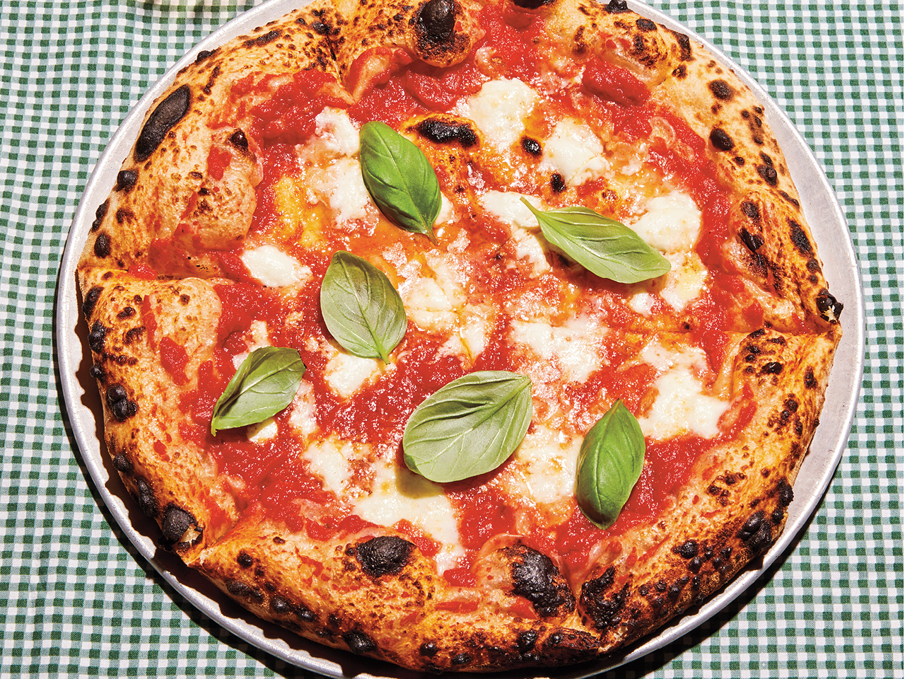

Margherita Pizza Reciept

Pizza is one of the best foods in the world. Out of everything that exist in the world,
Pizza is top 10 for sure. Now there are many different types of pizza out there some with
pepperioni, some with red and green peppers, some with mushrooms, etc. The pizza is possibly
one of the most customizable foods to ever exist on the planet in terms of the toppings you can
put on it. But here I would like to present to you, the standard margherita pizza.
Sometimes you don't have to do anything special, sometimes less is more...
Ingredients
Pizza Dough Ingredients (makes 4 pizzas):
- 500g Bread flour
- 16g kosher salt
- 1g active dry yeast
- 350 ml water
Pizza Sauce Ingredients:
- Extra virgin olive oil
- Garlic colves
- Red pepper flakes
- 28oz can of whole San Marzano tomatoes
- Onion powder
- Dried oregano
Other Ingredients:
- Low-moisture mozzarella cheese (shredded)
- Fresh basil
- Spicy soppresssata (optional)
- Fresh burrata cheese (optional)
- Calzone fillings (optional)
Method: Pizza
Dough
- In a medium bowl, thoroughly blend the flour, active dry yeast, and salt. Add the water and, with a wooden
spoon or
your hands, mix thoroughly.
-
Cover the bowl with plastic wrap or a kitchen towel and allow it to rise at room temperature for 18 hours or
unti
it has more than doubled. It will take longer in a chilly room and less time in a very warm one.
-
Flour a work surface and scrape out the dough. Divide it into 4 equal parts and shape them. For each portion, start
with the right side of the dough and pull it towards the center; then do the same with the left, then the top, then
the bottom(the order doesn't actually matter; what you want is four folds). SHape each portion into a round and turn seam
side down. Mold the dough into a neat circular mound. The mounds should not be sticky; if they are, dust with more flour.
-
if you don't intend to use the dough right away, wrap the balls individually in plastic and refrigerate for up to 3 days
Return to room temperature by leaving them out on the counter, covered in a damp cloth, for 2 to 3 hours before needed.
Pizza Sauce
-
Start by heating olive oil in a pan over medium heat. Then add some roughly cut garlic and saute for one
minute. Add some
red pepper flakes and let those cook for about 10-15 seconds.
-
Add a 28-ounce can of whole San Marzano tomatoes. Stir in and lightly break up the tomatoes. Add some
dry onion powder
alnog with soem dry oregano, sitr to combine and let simmer for 30-45 minutes.
-
Add sauce to a blender and puree for about 10-15 seconds.
Pizza Assembly
-
Slowly start to pat the dough down into the general shape of a pizza. Don't roll it out with a rolling pin.
Once the dough
had grown in size, pass over your knuckles and slowly start to spread it out until a pizza pie shape is
formed.
-
Add your sauce and low moisture mozzarella along with whatever toppings you'd like and place on your pizza
stone in your preheated
500°F oven (pre-heat for 1 hour). Bake for 7-9 minutes.
-
Let cool for a few minutes. Serve and enjoy.
Calzone Assembly
-
Spread sauce on half of your pizza and top with cheese and toppings of your choice.
-
Fold the dough over on itself and crimp closed with a fork.
-
Brush down with a little olive oil and place in a 500°F oven for 10-15 minutes.
-
Let cool, serve and enjoy.